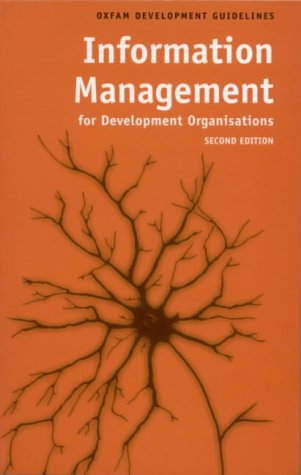

|  |
| About IR |
| Editors |
| Author instructions |
| Copyright |
| Author index |
| Subject index |
| Search |
| Reviews |
| Register |
| Home |
Powell, Mike. Information management for development organisations. (2nd ed.) Oxford: Oxfam, 2003. (Oxfam Development Guidelines.) 294p. ISBN 085598483X £10.95
Information management literature so often deals with the world of business, that it is sometimes forgotten that there are other kinds of organisations that can also benefit from more effective information use. This intelligent handbook provides us with a different view on the essence of information management. While targeted at managers in development organisations, with a large number of case examples from Oxfam projects, I feel it may serve to broaden the view of information management professionals and researchers in general.
Although the focus lies on more or less practical questions of how to use information to make a development organisation more effective, Powell stresses that information management choices have steadily become more strategic in nature, and that one needs to understand something of the broader societal and technological context in which information is produced and valued. Development organisations ought to recognize the changes the "information society" with its focus on information and its ICT development has wrought on the ways in which global development is possible. Especially the relationship between information and power is of importance for organisations whose goal is often claimed to be the empowerment of socially excluded groups. Thus, the empowerment of staff and partners in North and South is seen as one of the main goals of information management, alongside efficiency, effectiveness and creativity. Much attention is given to the challenge of giving real access to information in the culturally diverse context of international development, and Powell returns regularly to the question of ethics in his discussion of IM issues.
Powell has succeeded in taking a practical view on information and information management, without overly simplifying the issues at stake. He stresses that although almost anything can be information, for it to become a resource it is necessary to "see the links between the various pieces of information and to recognise what you have" (p.41). The essence of information management lies in being aware of the structure of information in the actual organisation, "understanding how it actually works in practice, and being ready and able to reshape it continuously" (p. 168).
The book starts with an introduction into the broader context of information, development and global change and definitions of key concepts like information, information management, and knowledge management. Thereafter Powell discusses strategic issues related to information management: management issues, the use of knowledge and the creation and diffusion of information, the concept of information architecture (which he gives a central, broad definition), and ICT. With numerous examples, cases and working documents he clarifies key concepts in both information management and knowledge management, and points out directions of thought that he sees as especially fruitful for development organisations. Every chapter ends with a checklist of questions to consider, but there are no simple solutions offered to complex problems.
In contrast to all too many IM and KM works, the book upholds a language that flows easily without losing itself in woolly digressions. Apart from this refreshing style, the main value of this book lies in the focus on a different kind of organisation, where the author repeatedly shows that information management is a strategic issue for all organisations, irrespective of values, goals, size or resources. Highly recommended!
Karen Nowé
Swedish School of Librarianship and Information Studies
Högskolan i Borås
March 2004
How to cite this review
(2004) Review of: Powell, Mike. Information management for development organisations. (2nd ed.) Oxford: Oxfam, 2003. Information Research, 9(3), review no. R133 [Available at: http://informationr.net/ir/reviews/revs133.html]